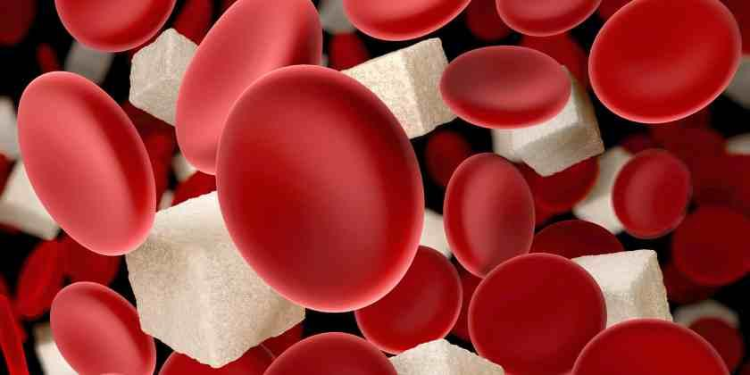
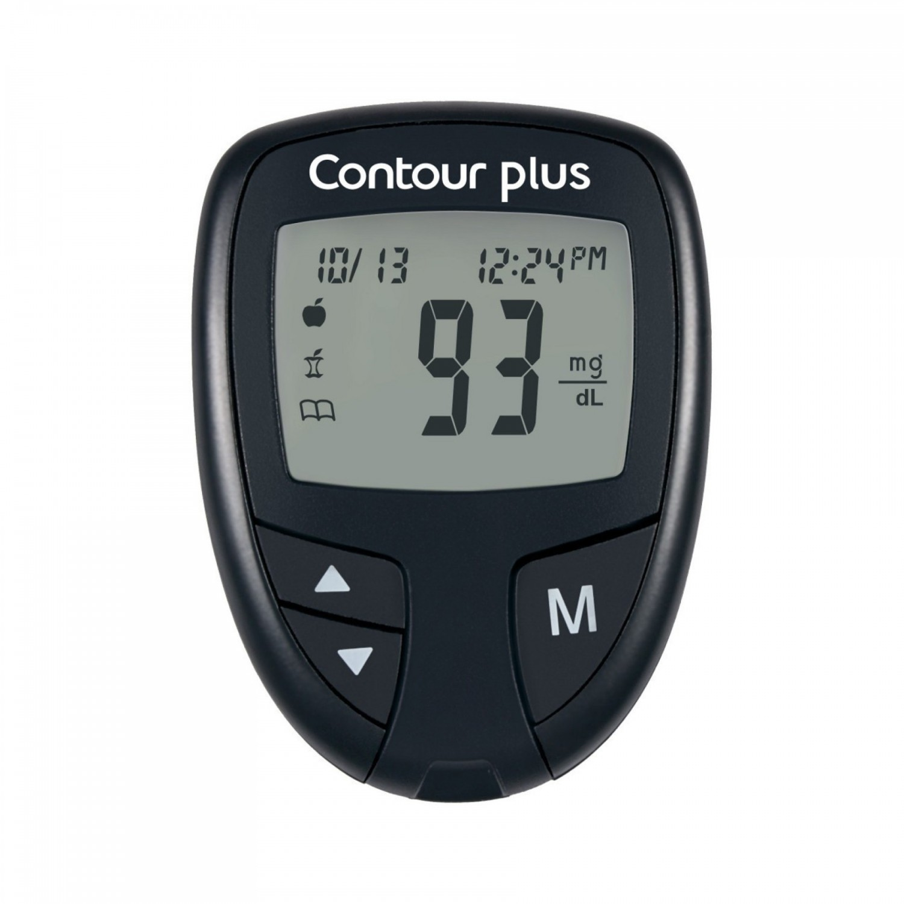

COMO MEDIR LA GLUCOSA
¿POR QUÉ DEBES MEDIR AZUCAR EN LA SANGRE?
Es es principalmente si tienes diabetes, y lo recomendable es hacer esto diario,la informacion de esas mediciones te indica si controlas adecuadamente tu nivel de glucosa llevar un control para
Además, medir glucosa en sangre te informa de lo siguiente:
|  |
|
COMO SE REALIZA
Primer se recomienda que Después de las comidas es fundamental esperar alrededor de 2 horas para hacer una medición adecuada. El nivel de azúcar en sangre se mide con un dispositivo cómodo y transportable, un aparato medidor de glucosa(Glucometro). Éste te permite realizar los controles de forma adecuada incluso fuera de casa.
El glucómetro (aparato medidor de glucosa) puede ser de diferentes tipos y modelos. Pueden variar en su tamaño, en el tipo de tiras de prueba (elemento desechable que reacciona ante la gota de sangre), en la cantidad de sangre que necesitan, el lugar del pinchazo, etc.
VAMOS PASO POR PASO
- Es aconsejable limpiar el dedo indice con alcohol , antes de ralizar el pinchazo
- Devemos de colocar nuestra tira reavtiva dentro del glucometro, este paso puede variar segun el tipo o modelo de glucometro con el que cuente por esta razon recomendamos leer el manual de su glucometro antes.
- Si todo esta correcto y su tiras funcioan le devera de dar los resultados en la pantalla del glucometro
|  | |
|
|
|
COMO INTERPRETAR LA MEDICION
Los valores normales o normoglucemia dependen de si tienes diabetes o no. Según la Fundación para la Diabetes (España) los valores normales de glucosa en sangre en ayunas son :